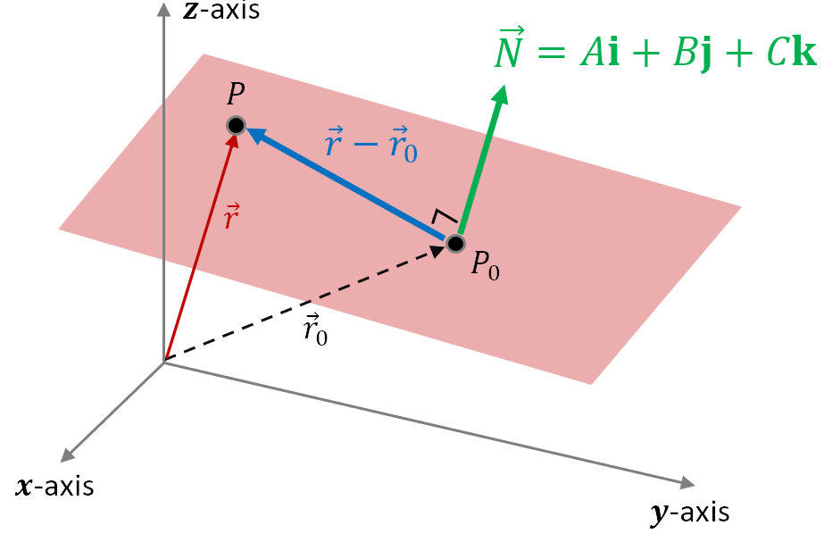
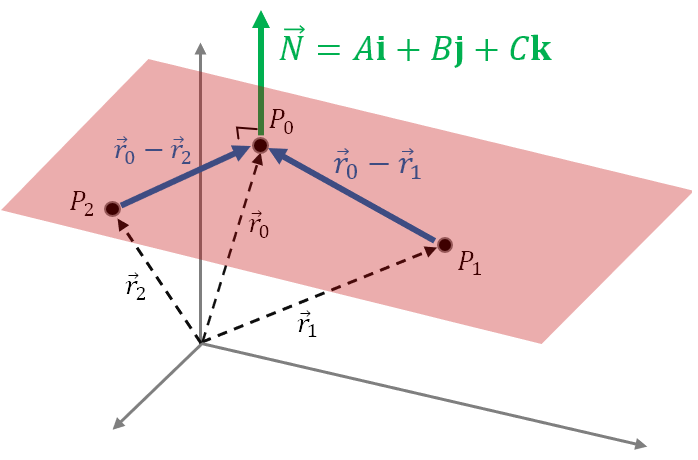
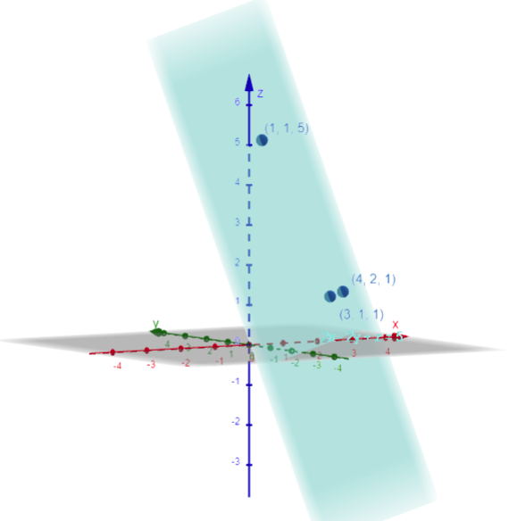

Lesson 5: Equations for Planes
Consider the plane shown in the figure.

- \(\vec{r}_0\) is the vector from the origin to a given point in the plane, \(P_0 = (x_0, y_0, z_0)\).
- \(\vec{r}\) is the vector from the origin to any point in the plane, \(P = (x, y, z)\).
- \(\vec{N}\) is a nonzero vector normal to the plane.
Because the difference between two vectors connects the vectors’ terminal points, the difference vector \(\vec{r} - \vec{r}_0\) is in the plane.
This means \(\vec{r} - \vec{r}_0\) and \(\vec{N}\) are orthogonal, so their dot product must be zero.
Vector Equation of a Plane
We derive this from the vector equation, writing the normal vector as \(\vec{N} = \langle A, B, C \rangle\).
We make the definition \(D = Ax_0 + By_0 + Cz_0\). This leads to the general equation of a plane.
General Equation of a Plane
Here \(\vec{N} = \langle A, B, C \rangle\) is normal to the plane, and \(D = Ax_0 + By_0 + Cz_0\) for a point \((x_0, y_0, z_0)\) in the plane.
An Example
Find the general equation of the plane containing the point \((1, 2, 1)\) with normal vector \(\vec{N} = 2\mathbf{i} + 3\mathbf{j} + 4\mathbf{k}\).
Use \((x_0, y_0, z_0) = (1, 2, 1)\). Also use \(\vec{N} = 2\mathbf{i} + 3\mathbf{j} + 4\mathbf{k} = A\mathbf{i} + B\mathbf{j} + C\mathbf{k}\), so \(A = 2\), \(B = 3\), and \(C = 4\).
An Example
Find the general equation of the plane containing the points \(P_0 = (4, 2, 1)\), \(P_1 = (3, 1, 1)\), and \(P_2 = (1, 1, 5)\).
We need to find a normal vector to the plane. We will use the position vectors of the three points.

We find two vectors in the plane by subtracting these vectors.
Key Idea: The cross product of two vectors produces a vector orthogonal to the vectors being multiplied. Since both \(\vec{r}_0 - \vec{r}_1\) and \(\vec{r}_0 - \vec{r}_2\) are in the plane, their cross product is a vector \(\vec{N}\) normal to the plane.
So \(A = -4\), \(B = 4\), and \(C = -2\). For \((x_0, y_0, z_0)\) we can use any of the three given points. We will use \((x_0, y_0, z_0) = (4, 2, 1)\).
Dividing both sides by \(-2\) gives a simpler form of the same equation.
The general equation of the plane is \(2x - 2y + z = 5\).
We can check our answer by graphing it at geogebra.org/3d. Notice how the equation produces a plane containing the three given points.
